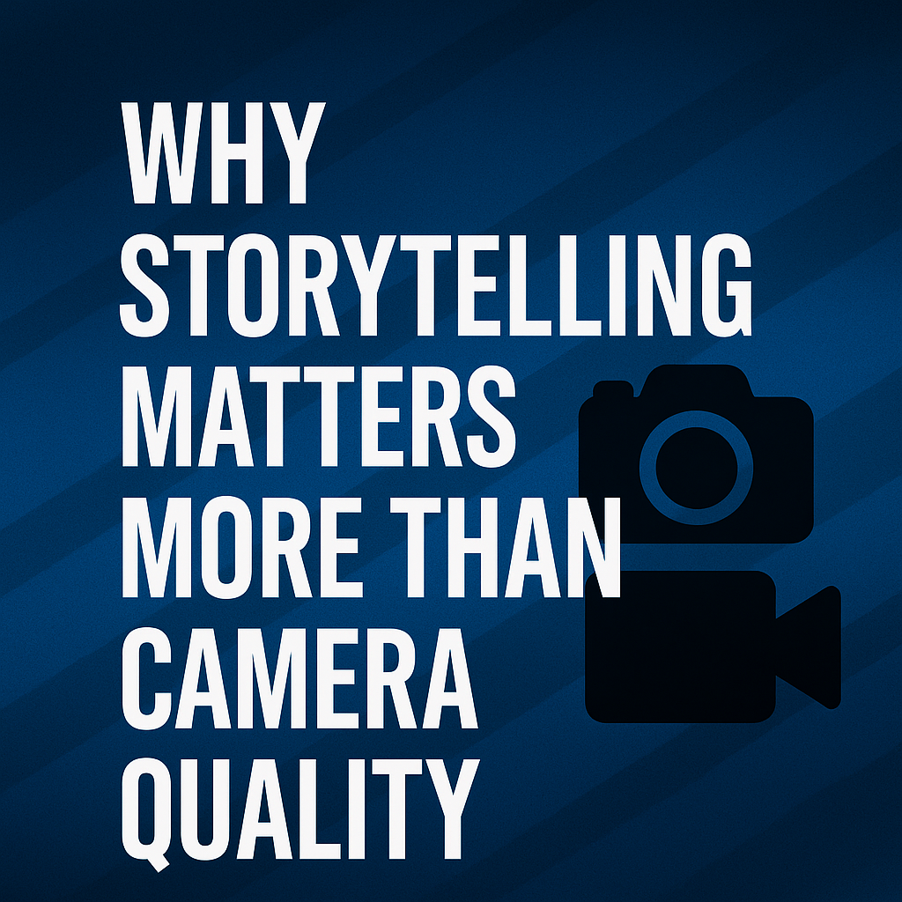

Why Storytelling Matters More Than Camera Quality

“People will forget your gear. They’ll remember your story.”
When I started my photography and videography journey, I thought my biggest limitation was my lack of professional equipment. I would see creators with expensive cameras, stabilizers, lighting kits, and think:
“If I just had what they had, I’d create something amazing too.”
But over time, I learned a truth that changed how I create: it’s not the camera that moves people, it’s the story you tell.
Some of the most powerful photos and videos I’ve seen were shot on simple gear, even a phone. What made them unforgettable wasn’t image sharpness or 4K resolution — it was the emotion, the perspective, and the meaning behind them.
Why Storytelling Outshines Camera Quality
A high-quality camera can capture sharp images, but storytelling gives your visuals life. Without a story, even the most technically perfect shot can feel empty.
When your work tells a story, it becomes memorable. That’s why in both photography and videography, story always wins over specs.
Think about your favorite movie scene or most loved photograph. You don’t remember it because of megapixels, you remember it because it made you feel something.
1. Capture Emotion First
When you pick up your camera or phone, ask yourself:
“What do I want people to feel when they see this?”
br
- In portraits, focus on real expressions, not just perfect poses.
- In videos, look for moments, laughter, stillness, or a tear falling.
- In events, capture details others might miss, a hand squeeze, a smile, the way light hits a face.
Emotion makes people connect. Gear just records it, you create it.
2. Use Composition as a Storytelling Tool
Composition is the visual grammar of your story. You don’t need expensive gear to learn it, it’s free.
- Leading lines guide the viewer’s eye.
- Rule of thirds creates balance and focus.
- Negative space adds mood and gives your subject room to breathe.
Good composition helps people understand the feeling you’re trying to share.
3. Think Like a Director
In videography especially, you’re not just capturing, you’re guiding the audience.
- Hook them with a strong opening shot or sound.
- Build flow by arranging shots in a logical, emotional order.
- Pay off the story with a satisfying ending that leaves a memory.
A phone in the hands of a storyteller is more powerful than a cinema camera in the hands of someone without vision.
Your Perspective is Your Superpower
Anyone can buy a good camera. But no one can copy your eye, your style, and your voice.
Some of the most viral and touching visuals online were shot on entry-level gear. The creators behind them understood that storytelling is limitless, even on a budget.
Final Thoughts
Whether you’re a mobile creator or a professional filmmaker, the truth remains: storytelling outlives specs.
Yes, improve your technical skills. Yes, learn your camera. But don’t let gear obsession stop you from creating now.
The best story you’ll ever tell might be the one you shoot today, with the gear you already have.